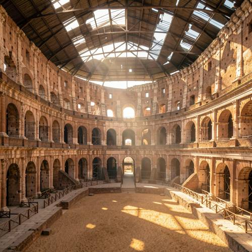
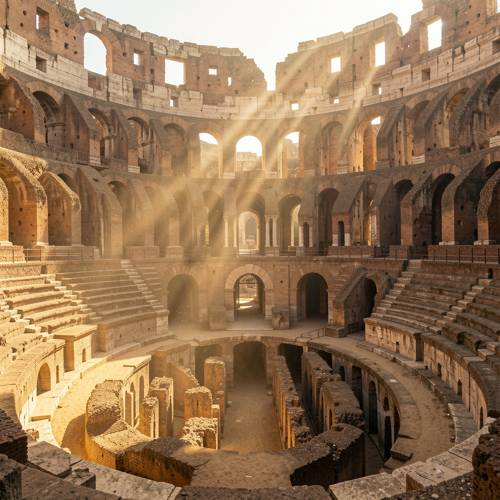

World Knowledge — From the interior perspective of the ancient Roman Colosseum, sunlight
From the interior perspective of the ancient Roman Colosseum, sunlight shines in through the dilapidated roof structure, illuminating the sand and passages below.

Direct — one call, no iteration

Continuum — Kimi K3 + FLUX.2-klein-9B
Judge — Direct
FAILWorld Knowledge — The image displays an ancient amphitheater with architectural features, such as the elliptical shape and tiered arcades, that are characteristic of the Roman Colosseum. However, the structure is depicted with a large, fixed, and dilapidated roof structure made of beams and panels. The actual ancient Roman Colosseum is an open-air amphitheater and does not have such a permanent roof; it historically used a retractable awning called a velarium, which would have had a different appearance. The presence of this anachronistic roof makes the depiction factually inaccurate.
Judge — Continuum
PASSWorld Knowledge — The image accurately depicts the interior of the ancient Roman Colosseum. Key architectural features are present, such as the elliptical shape, the tiered seating, the multiple levels of arched openings, and the ruined state of the upper structure. The exposed network of passages and walls in the center of the arena, known as the hypogeum, is also correctly represented as it appears today.
What the agent did
Thinking
Generate image with flux2-klein.
Step 1 — `generate_image`
{
"prompt": "Interior view of the ancient Roman Colosseum amphitheater, wide-angle perspective from inside the arena looking across at the ruined tiered stone seating walls and arched openings. Broken, partially collapsed stone roof and upper wall structures allow dramatic shafts of warm sunlight to stream diagonally down through the gaps, volumetric god rays illuminating the sandy arena floor and the hypogeum passages below with golden light and dust motes. Weathered travertine and brick masonry, deep shadows in the corridors, atmospheric haze, cinematic photorealistic rendering.",
"model": "flux2-klein"
}
Result img_0
Thinking
The image looks quite good. It shows interior of Colosseum, sunbeams streaming through the dilapidated upper structure, illuminating the hypogeum passages and sandy areas below. It matches the prompt well. The sandy arena floor is partially present (the ground area). Mark best and stop.
Model
The image matches the prompt well: interior perspective of the Colosseum with volumetric sunlight streaming through the broken upper walls and arches, illuminating the hypogeum passages and sandy floor below.
Step 2 — `mark_best`
{
"image": "img_0",
"reason": "Interior Colosseum view with dramatic sun rays through dilapidated upper structure, illuminating hypogeum passages and sandy ground \u2014 all prompt elements present and well-rendered."
}
Model
Done. The generated image captures everything the prompt asked for: - **Interior perspective** — viewed from inside the arena, with the curved tiered stone seating and stacked arched galleries surrounding the viewer. - **Dilapidated structure** — weathered travertine and brick, broken upper walls with gaps and missing sections. - **Sunlight streaming through** — clear volumetric god rays angling down through the ruined openings, with dust in the air. - **Sand and passages below** — the exposed hypogeum corridors and sandy ground plane are lit by the golden light. The image is marked as best and ready.